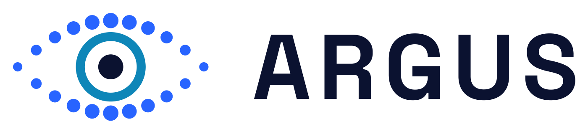

October 2026. Overview and technical summary of the Argus code in this repository (projects/argus, including the engine it is built on). Details: Argus — Documentation, the project README and ENGINE.md.
Argus lets you ask your cameras what happened, in plain language, and answers with the frames as evidence.
Sites record far more video than anyone watches. A recorder lets you jump to a time, not to a moment, so finding something means scrubbing through hours of footage. Classic camera AI answers "is X happening right now?" only for rules set up in advance; today's question was usually not one of them.
| Step | What happens |
|---|---|
| Record | Every camera's stream is analysed live: all 80 everyday object types are detected and tracked, each tracked object and each scene is stored as a searchable description, and each person's body pose becomes facts (posture, hands up, facing, colour of top and trousers). |
| Ask | A question such as "Was there a white van at the gate yesterday evening?" is split into what, when and which camera. Time can be plain words ("last friday", "this morning", "6pm to 9pm"). |
| Answer | A language model looks things up in the site's memory, answers in sentences and lists the thumbnails it checked as evidence. |
| Alert | The same recorder fires alerts on areas and lines drawn on each camera (enter, leave, stay too long, cross, too many at once), plus person down and hands up from body poses, bags left behind, a camera covered, turned or blurred, plates on a watchlist and sounds such as smoke alarms or breaking glass. Alerts go to webhook or email, filtered by rule, object, hours and cooldown. |
Argus says which kind of answer it gives:
| Working now | Next |
|---|---|
| Recording and indexing per camera (80 object types + scene snapshots) | Fire and smoke detection (own model, open datasets) |
Plain-language search without an LLM (ask.py) |
A fixed set of test questions to compare chat models |
Chat with switchable local or cloud models; a local vision model reads the evidence images (look) |
Scene captions from a small vision-language model |
| Main-stream recording and full-resolution crops | Multi-camera timeline (one visit across cameras) |
| Area / line / crowding alerts, bags left behind, camera tampering, to webhook and email; chat answers about past alerts | Telegram, WhatsApp, SMS and on-site siren channels |
| Body poses: posture, hands up, colours; person-down and hands-up alerts | Person-down validated on staged falls at a pilot site |
| Face search by photo (opt-in) | Chat in the browser; API login |
| Number plates per vehicle, plate search, watchlist alerts (opt-in; trial plate finder) | Our own plate finder; read rates on real cameras |
| Sound events from camera microphones: smoke alarm, glass, gunshot, scream, siren (opt-in) | Checked on real camera audio |
Go-to-market: a pilot on the client's own recorded footage (we index a sample, they ask their own questions, then decide). A partner programme (Silver / Gold / Platinum, 10–30%) is drafted for introducers and CCTV installers.
IP cameras (RTSP)
├─ sub stream ──► detect (YOLOX) ─► track (IoU tracker) ─► zone / line rules ─► alerts ─► webhook, email
│ │
│ ├─► CLIP index: objects (every 2 s), scenes + 2x2 tiles (every 5 s)
│ ├─► pose index: 17 keypoints → posture, arms, facing, colours (~1/s)
│ ├─► face index: YuNet + SFace, best 5 faces per visit (opt-in)
│ ├─► plate index: plate finder + reader on vehicles (~1/s, opt-in)
│ └─► abandoned bags, crowding; tamper check on the picture
├─ audio ───────► YAMNet: smoke alarm, glass, gunshot, scream, siren → events (opt-in, audio not kept)
└─ main stream ─► ffmpeg: 1-minute MP4s (copy, no re-encode) + keyframes for full-resolution crops
│
one SQLite store per site (events, sightings, faces, poses, plates + media)
│
├─► ask.py plain-language search, rules only (no LLM)
├─► chat.py LLM + tools (+ a local vision model), answers with evidence
└─► server.py FastAPI: search, people, plates, events, media, recordings
One recorder process per camera; each heavy step (CLIP, pose, faces) runs on its own thread and skips samples rather than slowing detection, so a busy scene is sampled more sparsely instead of lagging behind.
The code is one Python package, argus, in projects/argus, with one uv environment (Python ≥ 3.11):
record.py, ask.py, chat.py (chat CLI), tools.py (what the LLM may call), llm.py
(model backends), vision.py (the local vision model behind look) and ui.py (test UI: record, find a person by photo, chat, reports, and the engine's test bench).About 9,800 lines of Python and ~270 tests (uv run pytest). Other folders:
docs/ (documentation, partner programme, presentation), Brochures/, Images/argus/
(brand kit).
| Role | Model | Licence | Cost on a laptop CPU |
|---|---|---|---|
| Object detection | YOLOX-Nano (COCO, 80 classes), larger YOLOX variants selectable | Apache-2.0 | 4 MB model, real time |
| Visual search | CLIP ViT-B/32 (OpenCLIP, LAION-2B), float32 | MIT | ~30 ms per crop, 2 KB per vector |
| Body pose | ViTPose-B, COCO only | Apache-2.0 | 100–175 ms per person |
| Faces (opt-in) | YuNet detector + SFace recogniser | MIT / Apache-2.0 | 128-number face print |
| Chat (default) | Qwen3 4B via Ollama; others selectable | Apache-2.0 | CPU |
| Plates (opt-in) | Finder: YOLOv9-t 384 (trials); reader: fast-plate-ocr CCT-S | MIT (finder weights: legal check) | ~11 + ~10 ms per vehicle |
| Sounds (opt-in) | YAMNet (AudioSet, 521 classes) | Apache-2.0 | ~3 ms per 3 s of audio |
look tool |
Qwen3.5 4B via Ollama (vision) | Apache-2.0 | seconds per image |
All vision models run as ONNX graphs with numpy/OpenCV pre- and post-processing: no PyTorch at run time and a straightforward port to C++. PyTorch is only used in one-off export scripts.
1. Parse. query.py turns the sentence into what / when / camera with rules (today,
yesterday, last friday, after 10pm, last 2 hours, camera names and aliases). No LLM needed.
2. Look up. The chat model gets up to seven tools over the store (people, plates,
face and look only where they are enabled) and may run up to six rounds of lookups:
| Tool | Answers | Kind |
|---|---|---|
objects |
what was tracked, when, how many; "together with" (same camera within 15 s) | exact |
search |
CLIP text-to-image search over objects and scene tiles | ranked |
people |
posture time, hands up, facing, clothing colours | exact |
alerts |
what the alert rules fired | exact |
face |
visits matching an attached photo (likely / possible) | scored |
plates |
vehicles by number plate (look-alike characters forgiven) | exact / close |
look |
a local vision model reads images earlier results listed (counts, actions, text) | described |
3. Group and cite. Sightings of the same track are merged into one visit; the answer lists the thumbnails it relied on.
Models are config entries, not code: any OpenAI-compatible server (Ollama, llama.cpp, LM Studio,
vLLM) or the Anthropic API. Each camera has an about: block (location, aliases, what it covers,
face quality, normal hours) that goes into the model's instructions.
events (with JPEG snapshots), sightings (CLIP vectors),
faces, poses. Pose rows are written only on change plus a 10 s heartbeat (~250 bytes each)./search, /search/face, /people, /events, /media, /recordings
(links open the video 3 s before the moment), /cameras, /health, /maintenance/purge..env.127.0.0.1 or behind a proxy with login.